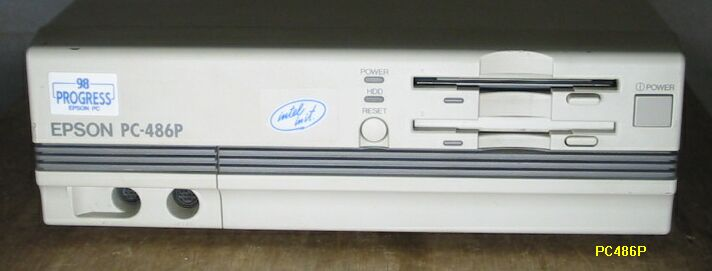

PC486P2 486DX2 50MHz改造

PC486P2の主な仕様
・CPU;i486SX16MHz i38610/5MHz相当に切り替え可能
・RAM;1.6MB max14.6MB
・FDD;1M/640Kバイト両用タイプの3.5インチFDD２基内蔵
・HDD;3.5インチSCSIタイプHDD１基内蔵可能、オプション装着によりノート用HDDパック装着可能
・外部拡張スロット;2 PC98用互換ボード装着可能
PC486PはエプソンのPC互換機で、A4版サイズのコンパクトマシンです。PC98をいじっていると、その唯一の互換機であった、エプソンのマシンにも興味を感じ、秋葉原を歩いているときに見つけ、購入したものです。小型ですので、片手で下げて帰れる、というのも、もうひとつの購入の理由です。普通のデスクトップ機は、いくら安くても持って帰りたくは無いですからね。このマシンは、486SX25MHzで、72pinSIMMのスロットが2個あります。エプソンノートPC用のHDなら内蔵できるようですが、まだ見つかっていません。CPUはドーターカード式になっており、486SXが半田付けされています。CPUのそばにジャンパーピンが3個ついており、そのうちの1個をオンにすると、486SXが停止します。もう1つ486用のソケットがついているので、そこに486DX2を挿すと、50MHzで動作します。
（2003/05/05 追記）
EPSON-PC98互換機のページに戻る